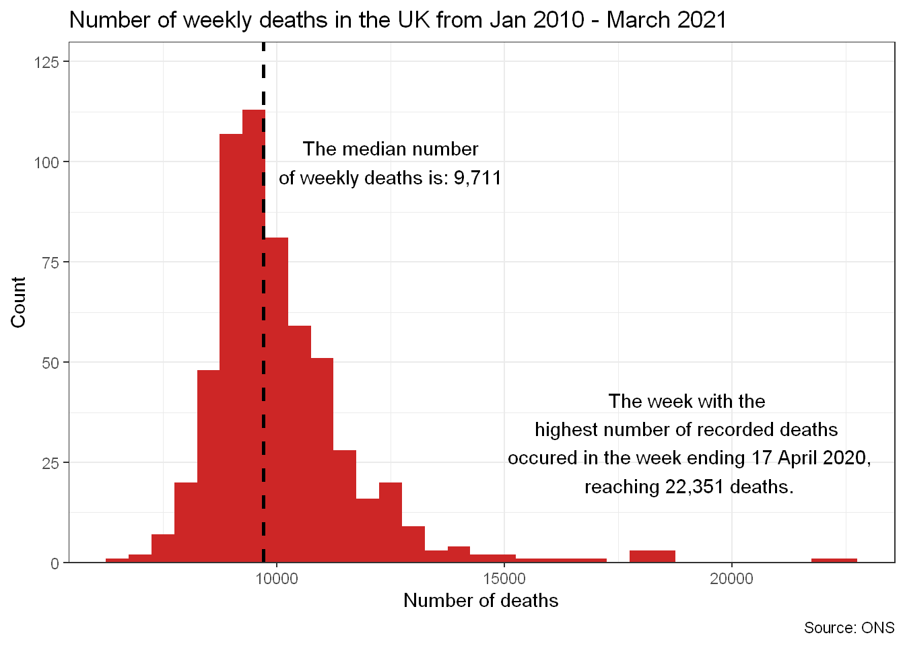
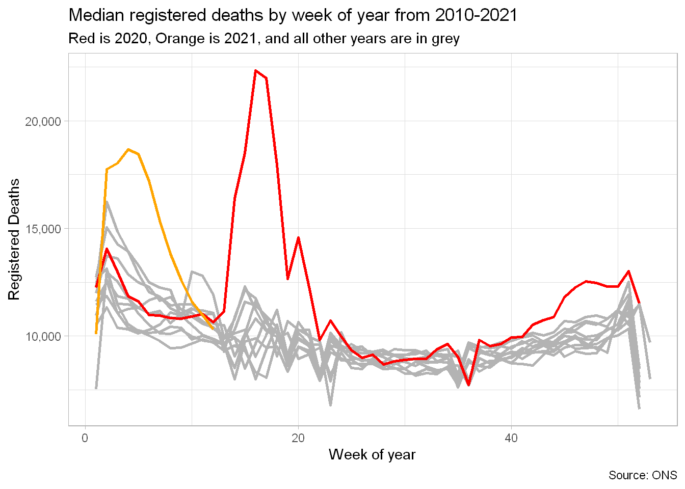
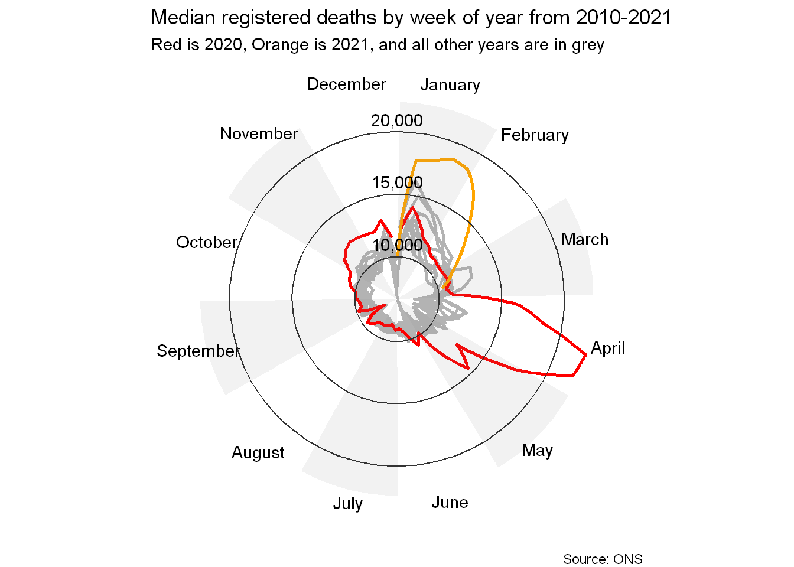
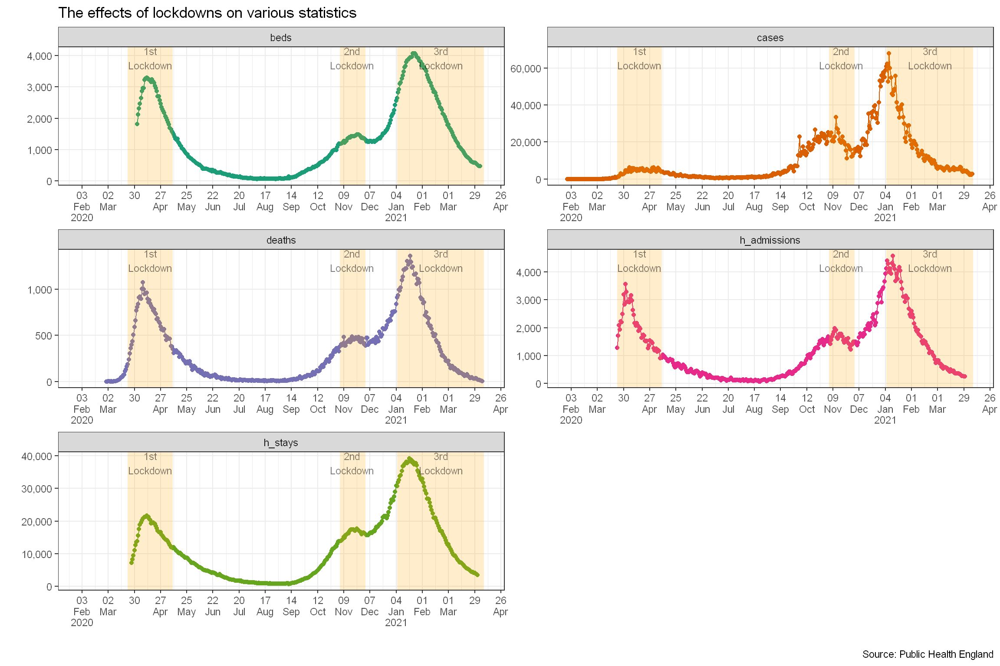

This post will be taking a short look at the effects of coronavirus in the UK. Mainly we will be looking at the deaths and a few hospital statistics to see what has happened.
library(tidyverse)weekly_deaths <- read_csv(here::here("static/data/UK covid deaths weekly.csv")) %>%
janitor::clean_names() %>%
mutate(date = as.Date(date , format = "%d-%b-%y") )
glimpse(weekly_deaths)## Rows: 585
## Columns: 2
## $ date <date> 2010-01-08, 2010-01-15, 2010-01-22, 2010-01-29, 2010-02-05,...
## $ deaths <dbl> 12968, 12541, 11762, 11056, 10524, 10117, 10102, 10295, 9981...We can look at the number of registered deaths in England and Wales. The data comes from the Office of National Statistics. First we can see that the median number of deaths is 9,711 deaths per week.
weekly_deaths %>%
ggplot(aes(x=deaths))+
geom_histogram(binwidth = 500,fill="firebrick3")+
geom_vline(xintercept = median(weekly_deaths$deaths), lty=2,size=1 )+
annotate(geom="text",label=paste0("The median number\nof weekly deaths is: ", scales::comma(median(weekly_deaths$deaths))) ,x = 12500,y=100 )+
annotate(geom="text",
label=paste0("The week with the\n highest number of recorded deaths \n occured in the week ending ",
format(weekly_deaths %>% slice_max(order_by = deaths) %>% pull(date), format = "%d %B %Y") ,
",\n reaching ", scales::comma(max(weekly_deaths$deaths)) ," deaths.") ,
x = 19000,y= 30 )+
scale_y_continuous(expand=c(0,0),limits = c(0,130))+
labs(title="Number of weekly deaths in the UK from Jan 2010 - March 2021",
x="Number of deaths",y="Count", caption="Source: ONS")+
theme_bw()
We can also see how the number of deaths changed over the course of the year. January usually sees the highest death rates in the year, while Summer sees the lowest.
weekly_deaths %>%
mutate(week = lubridate::week(date),
year = lubridate::year(date),
yday = lubridate::yday(date),
colour = case_when(year == 2020 ~ "red",
year == 2021 ~ "orange",
TRUE ~ "grey70") ) %>%
ggplot( aes(x=week,y=deaths,group=year,color = I(colour)))+
geom_line(size=1)+
# gghighlight::gghighlight(year %in% c(2020,2021) ,use_direct_label = TRUE,label_key = year,use_group_by = FALSE )+
labs(title="Median registered deaths by week of year from 2010-2021",
subtitle = "Red is 2020, Orange is 2021, and all other years are in grey",
x="Week of year",y="Registered Deaths", caption="Source: ONS")+
scale_y_continuous(labels = scales::comma_format())+
theme_light()
We can also use polar coordinates to display the results to take advantage of the cyclic nature of the days during a year.
weekly_deaths %>%
mutate(week = lubridate::week(date),
year = lubridate::year(date),
yday = lubridate::yday(date),
colour = case_when(year == 2020 ~ "red",
year == 2021 ~ "orange",
TRUE ~ "grey70") ) %>%
ggplot( aes(x= yday,y=deaths,group=year,color = I(colour)))+
geom_line(size=1) +
# gghighlight::gghighlight(year %in% c(2020,2021) ,use_direct_label = TRUE,label_key = year,use_group_by = FALSE )+
labs(title="Median registered deaths by week of year from 2010-2021",subtitle = "Red is 2020, Orange is 2021, and all other years are in grey"
, caption="Source: ONS")+
coord_polar()+
annotate(geom ="rect",xmin=1,xmax=31,ymin = -Inf,ymax=Inf,alpha=0.1,fill="grey50")+ #January
annotate(geom ="rect",xmin=60,xmax=90,ymin = -Inf,ymax=Inf,alpha=0.1,fill="grey50")+ #March
annotate(geom ="rect",xmin=121,xmax=151,ymin = -Inf,ymax=Inf,alpha=0.1,fill="grey50")+ #May
annotate(geom ="rect",xmin=182,xmax=212,ymin = -Inf,ymax=Inf,alpha=0.1,fill="grey50")+ #July
annotate(geom ="rect",xmin=244,xmax=273,ymin = -Inf,ymax=Inf,alpha=0.1,fill="grey50")+ #Sept
annotate(geom ="rect",xmin=305,xmax=335,ymin = -Inf,ymax=Inf,alpha=0.1,fill="grey50")+ #Nov
annotate(geom="text",label="January",x=(31+1)/2,y=Inf,vjust=-1.5 )+ annotate(geom="text",label="February",x=(31+60)/2,y=Inf,vjust=-1.5 )+
annotate(geom="text",label="March",x=(60+90)/2,y=Inf,vjust=0 )+annotate(geom="text",label="April",x=(90+121)/2,y=Inf,hjust=-.1 )+
annotate(geom="text",label="May",x=(121+151)/2,y=Inf,vjust=1.5 )+ annotate(geom="text",label="June",x=(151+182)/2,y=Inf,vjust=1.5 )+
annotate(geom="text",label="July",x=(182+212)/2,y=Inf,vjust=1.5 )+ annotate(geom="text",label="August",x=(212+244)/2,y=Inf,vjust=1.5 )+
annotate(geom="text",label="September",x=(244+273)/2,y=Inf,hjust=.6 )+annotate(geom="text",label="October",x=(273+305)/2,y=Inf,vjust=0 )+
annotate(geom="text",label="November",x=(305+335)/2,y=Inf,vjust=-1.5 )+ annotate(geom="text",label="December",x=(335+365)/2,y=Inf,vjust=-1.5 )+
annotate(geom="text",label="10,000",x=0,y=11000)+ annotate(geom="text",label="15,000",x=0,y=16000)+annotate(geom="text",label="20,000",x=0,y=21000)+
geom_hline(yintercept = 10000,col="grey20")+ geom_hline(yintercept = 15000,col="grey20")+ geom_hline(yintercept = 20000,col="grey20")+
theme_void()+
theme()
Let’s investigate how the different variables were affected in the period before, during and after lockdowns. Namely, we will look at:
cases - Number of cases per daydeaths - Number deaths per dayh_admissions - Number of admissions to hospitals per dayh_stays - Number of patients staying at hospitals per daybeds - Number of beds used in hospitals per dayThe data comes from Public Health England.
# Helper function to read in json data
get_data_json <- function(url){
raw_result <- httr::GET(url)
result <- httr::content(raw_result, as = "text") %>%
jsonlite::fromJSON()
return(result$data)
}url <- "https://coronavirus.data.gov.uk/api/v1/data?filters=areaType=overview&structure=%7B%22areaType%22:%22areaType%22,%22areaName%22:%22areaName%22,%22areaCode%22:%22areaCode%22,%22date%22:%22date%22,%22newCasesByPublishDate%22:%22newCasesByPublishDate%22,%22cumCasesByPublishDate%22:%22cumCasesByPublishDate%22%7D&format=json"
cases <- get_data_json(url) %>%
select(4,cases = 5)
url <- "https://coronavirus.data.gov.uk/api/v1/data?filters=areaType=overview&structure=%7B%22areaType%22:%22areaType%22,%22areaName%22:%22areaName%22,%22areaCode%22:%22areaCode%22,%22date%22:%22date%22,%22newDeaths28DaysByDeathDate%22:%22newDeaths28DaysByDeathDate%22,%22cumDeaths28DaysByDeathDate%22:%22cumDeaths28DaysByDeathDate%22%7D&format=json"
deaths <- get_data_json(url) %>%
select(4,deaths = 5)
url <- "https://coronavirus.data.gov.uk/api/v1/data?filters=areaType=overview&structure=%7B%22areaType%22:%22areaType%22,%22areaName%22:%22areaName%22,%22areaCode%22:%22areaCode%22,%22date%22:%22date%22,%22covidOccupiedMVBeds%22:%22covidOccupiedMVBeds%22%7D&format=json"
beds <- get_data_json(url) %>%
select(4,beds=5)
url <- "https://coronavirus.data.gov.uk/api/v1/data?filters=areaType=overview&structure=%7B%22areaType%22:%22areaType%22,%22areaName%22:%22areaName%22,%22areaCode%22:%22areaCode%22,%22date%22:%22date%22,%22newAdmissions%22:%22newAdmissions%22,%22cumAdmissions%22:%22cumAdmissions%22%7D&format=json"
h_admissions <- get_data_json(url) %>%
select(4,h_admissions=5)
url<- "https://coronavirus.data.gov.uk/api/v1/data?filters=areaType=overview&structure=%7B%22areaType%22:%22areaType%22,%22areaName%22:%22areaName%22,%22areaCode%22:%22areaCode%22,%22date%22:%22date%22,%22hospitalCases%22:%22hospitalCases%22%7D&format=json"
h_stays <- get_data_json(url) %>%
select(4,h_stays=5)
uk_covid <- full_join(cases,deaths,by="date") %>%
full_join(beds,by="date") %>%
full_join(h_admissions,by="date") %>%
full_join(h_stays,by="date") %>%
mutate( date = as.Date(date))
glimpse(uk_covid)## Rows: 434
## Columns: 6
## $ date <date> 2021-04-07, 2021-04-06, 2021-04-05, 2021-04-04, 2021-...
## $ cases <int> 2763, 2379, 2762, 2297, 3423, 3402, 4479, 4052, 4040, ...
## $ deaths <int> NA, 5, 8, 12, 18, 15, 24, 33, 34, 30, 30, 35, 45, 43, ...
## $ beds <int> NA, NA, NA, 469, 477, 485, 517, 547, 568, 583, 582, 59...
## $ h_admissions <int> NA, NA, NA, NA, NA, NA, NA, NA, 256, 249, 273, 268, 30...
## $ h_stays <int> NA, NA, NA, NA, NA, NA, 3536, 3726, 3962, 4185, 4175, ...lockdown_ann <- function(start_date,end_date,fill="orange",text=FALSE,label=label,vjust=1,size=3){
# Helper function to create annotations for plots
if (text == FALSE){
annotate(geom="rect",xmin= start_date , xmax = end_date , ymin= -Inf, ymax = Inf ,alpha=0.2, fill=fill)
}
else{annotate(geom="text",x= (start_date-end_date )/2 + end_date,
y=Inf,
label=label,vjust=vjust,alpha=0.5,size=size)
}
}
lockdown_1_start <- as.Date("2020-03-23")
lockdown_1_end <- as.Date("2020-05-10")
lockdown_2_start <- as.Date("2020-11-05")
lockdown_2_end <- as.Date("2020-12-02")
lockdown_3_start <- as.Date("2021-01-5")
lockdown_3_end <- min(as.Date("2021-06-21"),Sys.Date())
lockdown_1 <- lockdown_ann(lockdown_1_start ,lockdown_1_end)
lockdown_1_text <- lockdown_ann(lockdown_1_start ,lockdown_1_end,text=TRUE,label="1st\nLockdown")
lockdown_2 <- lockdown_ann(lockdown_2_start,lockdown_2_end)
lockdown_2_text <- lockdown_ann(lockdown_2_start,lockdown_2_end,text=TRUE,label="2nd\nLockdown")
lockdown_3 <- lockdown_ann(lockdown_3_start,lockdown_3_end)
lockdown_3_text <- lockdown_ann(lockdown_3_start,lockdown_3_end,text=TRUE,label="3rd\nLockdown")uk_covid %>% pivot_longer(cols=2:6) %>%
ggplot(aes(x=date,y=value,col=name))+
geom_point()+geom_line()+
facet_wrap(.~name,scales="free",ncol=2)+
scale_y_continuous(labels=scales::comma_format())+
scale_x_date(date_breaks = "4 weeks",labels = scales::label_date_short())+
scale_color_brewer(palette="Dark2")+
labs(title="The effects of lockdowns on various statistics",
x="",y="", caption="Source: Public Health England")+
lockdown_1+lockdown_1_text+
lockdown_2+lockdown_2_text+
lockdown_3+lockdown_3_text+
theme_bw()+
theme(legend.position = "none",
panel.grid.minor.y = element_blank())
It should be noted that for cases, the true number of cases are unknown in the period from the start of the duration to around June 2020. This is because wide testing was not available and hence the numbers in the period are an underestimation of the true number of cases in the population.
It it interesting to see the effects of lockdown on the various statistics, for example during lockdowns, the number of people admitted to hospital, staying in hospital, and or using beds reaches a peak, and then steadily decreases over the the course of the lockdown.
Looking further at the data around the period of the second lockdown, it appears that it was too early to ease lockdown restrictions as only a month later from the easing of the second lockdown restrictions, a third lockdown was enforced.